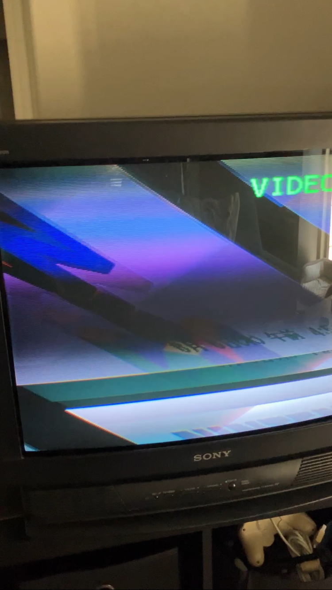

Installing an RGB Mux Board to my Sony KV27S15 (8/14/24)
Hello, and thanks for reading!
In my first post, I mentioned that I'd make a post about modding my CRT. I decided to go ahead and do so now, as I might just forget about this site (happens a lot) and never get around to it.
Not that I'd like that! If I can, I'd like to yap here for the foreseeable future. I guess it's a diary in that sense?
The CRT I modded is a Sony Trinitron KV27S15. The service tag says it was manufactured in June 1994... it's four years older than me!
It might sound odd... modding a television?
While it's probably not within the scope of my blog to explain fully, video signals come in two flavors: analog, and digital.
Digital video is what's most commonly used today, as the HDMI and DP (DisplayPort) standards. Neither of these look particularly different, as they carry (mostly) the same signals. It's just different standards.
Analog video is a different beast. You could almost tier analog video with how good / bad it looks. A list from worst to best would likely look something like:
* RF (Radio Frequency)
* Composite (Yellow / Red / White Cables, this is the most common)
* S-Video (The same as Composite with a separate line for sync to eliminate some quality loss)
* Component (Red / Green / Blue with Red and White, carrying the sync on green)
* RGB (Fully separate lines for audio and all three video lines, with an independent line for Sync.)
In the US, most consumer CRT sets that were sold only included Composite video. I believe in Europe, RGB through a SCART connector was a lot more available due to standards set in place for manufacturers.
While it was fine for the time, especially with me just being a child and not caring all that much about pixel-peeping, my standards have changed a bit.
So... what will we do?
While mileage varies on a CRT by CRT basis, some CRTs still are able to display RGB, even though they don't have a dedicated port for it. This is because some internal things were handled via RGB.
Namely, the On-Screen Display (OSD) where you adjust volume, settings, etc, is all controlled by RGB. And so is our target, the Closed Captions Decoder (CCD) used to display embedded subtitles. I'm not old enough... I think this was a VCR feature.
That's cool and all, but what does it help us if some of the CRT can display RGB? We still don't have an input. Well... yeah, but that's the thing. We can remove the video lines for CCD or the OSD that mix RGB with the usual input, and inject our own.
So that's exactly what we'll do. I followed the documentation by Sunthar to locate what we need to place. In short, we need:
* Red, Green, and Blue signals
* A blanking signal (It's essentially a line for the source to tell it the TV, hey, I'm going to send a new picture. Get rid of what you have.)
* Audio left and right signals
* Sync signal
* Ground(s)
First thing to do was to open the thing.

Man, it was filthy. I guess that's just what happens when you're 30. While I would have loved to give this the cleaning and new capacitors it deserved, it was not in the cards for me as I have neither the capacitors nor the equipment to properly clean the thing.
That said, the set operated just fine. A little dust isn't gonna kill it... I'll come back someday and make sure it's squeaky clean. As it is, I lightly dusted it with... a duster, and cleaned off some of the more ingrained stuff with IPA and alcohol wipes.
As per proper CRT safety, I used a flathead connected to a ground point to discharge the anode and make sure I don't die. This is a pretty intense process... I should've mentioned it before, but if you don't know what you're doing please don't try this at home.
In fact, watch this video from RetroTechUSA about proper CRT safety.
Did you watch it? Sure you did. Let's continue. If the things I said before sound like gibberish, then don't worry about it!
I regret not taking pictures of it, but at the spots labelled C316, C315, and C314 were 10uF capacitors, which are the barrel-looking things. Those were the terminations for the CCD output! As you can see, there are now Red, Green, and Blue wires connected to the positive end.
So now that the RGB wires are set, we're down to 7 connections left. Only one of them requires the removal of any components though, so it's fine. That would be the blanking resistor, labelled R165. Removing it and injecting our own blanking wire (brown) lets us send our own pulses.
For the next piece of soldering, we're looking at audio, sync, and ground. You can see them pictured as:
Audio Right = Gray (The one at the top, next to R402)
Audio Left = White (Below Gray, above R403)
Ground = Black and Purple
Sync = Yellow

This was simple, and it's all the soldering we need to do!
Now, we just have to plug all this into a Sunthar mini RGB mux kit. It's possible to do all this without the kit, but using one is a way cleaner and easier installation.
Plugging this all in, and making the necessary hole for the SCART input, we're finally at the point we want: a consumer CRT with a SCART port. I'm unfortunately not the best at making holes, but I tried my best here!
Now there's only one problem... the CRT doesn't really know that we're doing this and it can't really tell. As such, it displays an image that scrolls like crazy. This is because although we're giving it a sync signal, it doesn't know that it needs to latch onto it!

Additionally, the audio only outputs the left channel in both speakers because it doesn't know that there's a right channel source. How do we fix this? Simple: we use dummy plugs. In Sunthar's website they mention it looks a little less professional, but the trade off is losing access to
composite / mono audio in one of the inputs. Video 1 would permanently be either S-Video or RGB. Which isn't necessarily a bad thing... I'm just particularly a fan of saying that modding should add features while removing as little as possible. I can no longer use CCD here, but
having RGB input is a valid trade-off. I can easily remove and add dummy plugs and not look at them, they're behind the TV! Let's not make unnecessary sacrifices. After adding these dummy plugs, the TV comes to life with crispy RGB!
Sometimes it's a bit difficult to spot the difference, I can appreciate that. But this is, hands down, the best video quality you can get off an analog signal! Check out this quick comparison from the 240p Test Suite:
It's really easy to spot, isn't it? If you're unsure, the first image is composite video. The second is RGB. Notice how the streaking (bleed) is significantly reduced, and the yellow numbers are a lot better defined, and colored!
Now, it should be noted that the bleed shouldn't be there in the first place. I have a few problems with something called convergence in the CRT which I have to make manual adjustments of the electron gun for. Check this out:

This is Wonder Project J2. Do you notice to the right of the image, how the text box is all aligned, and then going down to the left it all just diverts into Red, Green, and Blue lines? That's not supposed to happen! Those are supposed to hit the same spot and make a pretty line.
Convergence is a bit outside my area of expertise, however. I might give it a shot at some point. For now, thankfully the RGB mod for my Trinitron was successful. I spent $5 on it back in 2015 ish at my local Goodwill when I was starting to get into Smash Bros.
It then dutifuly sat in my closet for nearly 10 years for this moment. I'm happy to have this thing in my setup. My plans with it are a bit weird. All my consoles are modded for HDMI output, or already have HDMI output.
I want to downscale all my devices into 480i / 480p if this TV can do that, and essentially run all my HDMI stuff, convert it to analog, and ouput it to the CRT as well as a 4K panel. I'm thinking about using the PixelFX Morph for that, since the upcoming analog bridge will support SCART output.
So, essentially, I'd be feeding the Morph 1080p or under and it'd downscale (instead of upscale) and send it to the CRT. At the same time, I'd be sending things to the RetroTINK4K that's already in my setup to output to the 4K panel... at the same time, I'd be sending to my receiver directly, so that content that is already 4K has no issues as neither scaler supports 4K passthrough.
My AV setup is a bit of a mess!
Thanks for reading! If you need to contact me for any reason, please feel free to email me at aru@hoshikawa-aru.com.